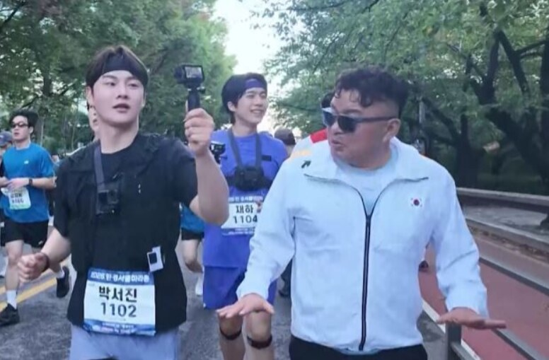
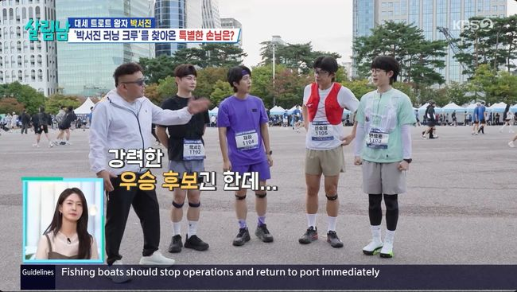
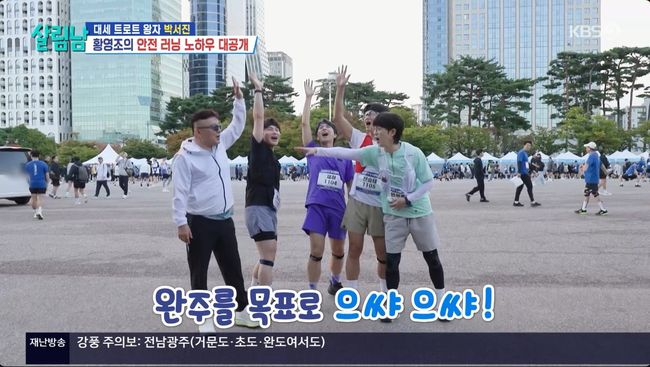
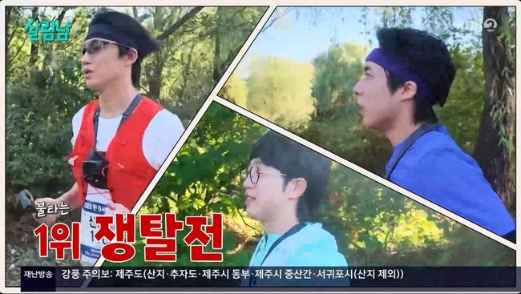
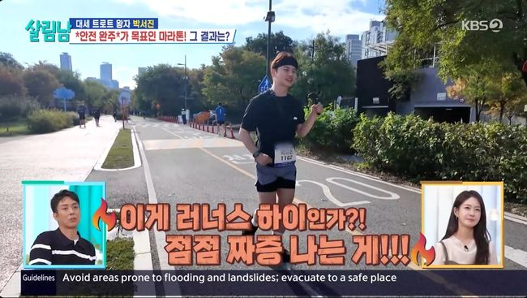
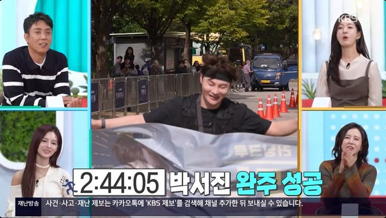
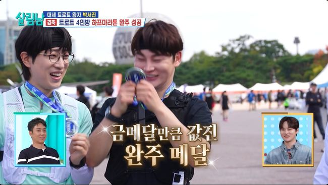

박서진 살림남 하프마라톤, 네 명의 완주 메달
완주 메달이 금메달보다 값지다박서진 러닝 크루 멤버들

황영조와 함께 달리는 박서진과 크루 · 출처: KBS2 살림하는 남자들
박서진 살림남 하프마라톤 도전이 네 사람 모두의 완주로 이어졌어요. 안성훈, 신승태, 재하와 함께 준비한 달리기가 각자의 메달로 남았네요.
박서진의 기록은 2시간 44분이었어요. 숫자와 함께 눈길이 가는 건, 레이스를 마치고 동료들에게 전한 고마움이에요.
이른 새벽 여의도에 모인 네 사람
출발을 준비한 곳은 서울 여의도공원이었어요. 박서진과 안성훈, 신승태, 재하가 이른 새벽부터 모여 하프마라톤을 앞두고 몸을 풀었어요.
네 사람에게는 10km 달리기를 완주한 경험이 있었어요. 그다음 목표로 잡은 하프 코스는 약 21km여서, 달려야 할 거리가 크게 늘어난 도전이었죠.

출발 전 황영조와 함께 모인 네 가수 · 출처: KBS2 살림하는 남자들
박서진은 이 도전을 위해 5개월을 준비했어요. 결승선에서 메달을 거는 순간만큼이나, 연습을 실제 대회 출발로 연결했다는 점도 눈길을 끌어요.
준비하는 방식에도 각자의 성격이 묻어났어요. 박서진은 대회장 가까이에 숙소를 잡아 컨디션을 챙겼고, 신승태는 출전을 앞두고도 연습에 열심이었어요.
재하에게는 어머니의 응원이 힘을 보탰고요. 같은 목표로 모였지만 출발선까지 가져온 마음과 준비 과정은 조금씩 달랐네요.
노래로 익숙한 네 사람이 달리기라는 공통 숙제를 나눴다는 점이 흥미로워요. 무대에서의 실력과 별개로 긴 코스를 어떻게 풀어갈지 궁금해지는 조합이에요.
황영조가 함께 뛴 초반 3km
네 사람을 응원하러 황영조도 현장을 찾았어요. 박서진에게 달리기를 지도한 스승이 출발 전부터 곁을 지켜준 셈이에요.
응원만 건네고 돌아간 건 아니에요. 직접 스트레칭을 지도하고, 부상을 막는 일과 컨디션 조절을 먼저 챙기도록 당부했어요.

완주를 목표로 조언하는 황영조와 크루 · 출처: KBS2 살림하는 남자들
황영조는 네 사람의 10km 연습 영상도 보며 달리는 모습을 짚어줬어요. 안성훈을 강력한 우승 후보로, 신승태를 대항마로 꼽아 크루 안의 경쟁 구도에도 재미를 더했어요.
레이스가 시작된 뒤에는 초반 3km 구간을 함께 달렸어요. 들뜬 대회 분위기에 휩쓸리지 않고 자기 속도를 지키라는 조언도 보탰고요.
함께 출발한다고 해서 처음부터 다른 사람의 속도를 따라가야 하는 건 아니라는 이야기였어요. 출발선의 의욕을 긴 거리 끝까지 가져가려면 달리는 과정의 조절도 필요하다는 뜻으로 읽혀요.
황영조는 약속한 구간을 달린 뒤에도 멤버들을 살폈어요. 코스 중간에서 기다리며 상태를 챙겨, 출발 전의 조언이 레이스 안에서도 이어졌어요.
누가 가장 빠를지 궁금한 상황에서도 안전 이야기가 먼저 나왔다는 점이 기억에 남아요. 네 사람의 도전을 응원하는 방식에도 세심한 차이가 느껴지네요.
신승태부터 재하·안성훈까지, 달랐던 페이스
크루 안의 경쟁에는 작은 보상도 걸려 있었어요. 네 사람 가운데 가장 먼저 들어온 멤버에게는 살림남 스튜디오 풀 출연권이 주어졌어요.
레이스에서 재하는 신승태와 경쟁하며 속도를 올렸어요. 연습 때 뒤처졌던 재하가 다른 모습을 보여줬다는 대목이 흥미로워요.
안성훈은 풀마라톤 경험을 바탕으로 페이스를 조절했어요. 앞선 멤버들의 체력이 떨어지면 역전을 노리겠다는 생각으로 달렸고요.

서로 다른 페이스로 달리는 안성훈·신승태·재하 · 출처: KBS2 살림하는 남자들
결과는 신승태가 네 명 가운데 1위였어요. 2시간 11분 36초로 들어오면서 스튜디오 출연권의 주인공이 됐어요.
재하는 2시간 21분, 안성훈은 2시간 26분 46초로 완주했어요. 여기서 신승태의 1위는 크루 네 사람 사이의 순서예요.
앞서 달리는 사람도, 자기 속도를 유지하는 사람도 있었네요. 네 명이 똑같은 방식으로 달리지 않았기에, 누가 먼저 도착했는지와 각자 어떻게 코스를 이어갔는지를 함께 살펴보게 돼요.
박서진 살림남, 2시간 44분의 결승선
박서진은 2시간 44분에 결승선을 통과했어요. 목표로 삼았던 2시간 30분에는 미치지 못했지만, 준비했던 하프 코스를 끝까지 마쳤어요.
레이스 초반에는 황영조의 조언에 맞춰 속도를 천천히 유지했어요. 다른 크루원들과 거리가 벌어지면서 박서진에게는 자신의 상태를 살피며 코스를 이어가는 시간이 됐어요.

레이스 중 코스를 달리는 박서진 · 출처: KBS2 살림하는 남자들
발목 통증도 있었어요. 황영조가 박서진을 보고 걷도록 조언한 대목은, 완주 기록과 함께 짚고 싶은 부분이에요.
도전을 준비한 마음이 컸다는 사실과 몸의 통증은 따로 생각해야겠죠. 이 이야기를 아파도 반드시 뛰어야 한다는 뜻으로 받아들이고 싶지는 않아요.
박서진이 동료들을 생각한 마음은 전해지지만, 황영조가 강조한 것도 충분한 준비와 안전한 완주였어요. 성취를 응원하는 만큼 몸을 살피라는 조언도 함께 남았으면 해요.
기록을 보는 마음도 조금 달라져요. 목표보다 늦게 도착했다는 아쉬움 옆에, 긴 준비 과정이 결승선까지 이어졌다는 결과를 함께 놓고 보게 되네요.

박서진의 하프마라톤 완주 기록을 알린 방송 화면 · 출처: KBS2 살림하는 남자들
박서진 살림남 완주 뒤 먼저 전한 고마움
레이스를 마친 박서진이 꺼낸 이야기는 동료들을 향한 감사였어요. 자신이 밀고 나간 프로젝트에 멤버들이 열심히 함께해줘서 고맙다는 마음을 전했어요.
감정이 북받쳐 눈물이 날 것 같다는 말도 했어요. 스스로 세운 목표를 마친 기쁨에, 그 과정에 함께해준 사람들을 향한 마음이 겹친 순간이었네요.

완주 뒤 메달을 들고 웃는 멤버들 · 출처: KBS2 살림하는 남자들
출발 전에는 스튜디오 출연권을 두고 경쟁했지만, 결승선을 지난 뒤에는 네 사람 모두 메달을 걸었어요. 순서는 달랐어도 완주라는 결과를 한 명도 빠짐없이 나누게 됐어요.
신승태에게는 크루 1위의 기쁨이, 재하와 안성훈에게는 각자의 페이스로 도착한 결과가 있었어요. 박서진에게는 자기 제안에 힘을 보태준 동료들을 돌아보는 시간이 더해졌고요.
이 조합의 이야기가 따뜻한 이유도 그 지점에 있어요. 경쟁하며 달렸던 사람들이 마지막에는 서로의 완주를 함께 기뻐할 수 있었다는 점이요.
메달은 하나씩 목에 걸었지만 준비한 시간에는 서로의 몫이 들어 있네요. 기록표의 숫자와 나란히, 고맙다는 박서진의 마음도 오래 남아요.
자주 묻는 질문
박서진의 살림남 하프마라톤 기록은 얼마인가요?
2시간 44분에 완주했어요. 목표였던 2시간 30분에는 미치지 못했지만 하프 코스를 마쳤어요.
안성훈·신승태·재하도 모두 완주했나요?
박서진을 포함해 네 명 모두 완주했어요. 크루 가운데 가장 먼저 들어온 사람은 신승태로, 살림남 스튜디오 풀 출연권도 받았어요.
황영조도 하프 코스를 함께 달렸나요?
황영조는 출발 전 스트레칭을 지도하고 초반 3km 구간을 함께 달렸어요. 이후에도 멤버들의 상태를 챙기며 페이스 조절과 안전을 강조했어요.